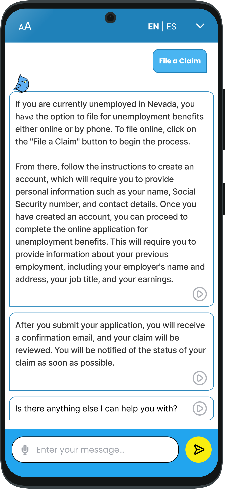
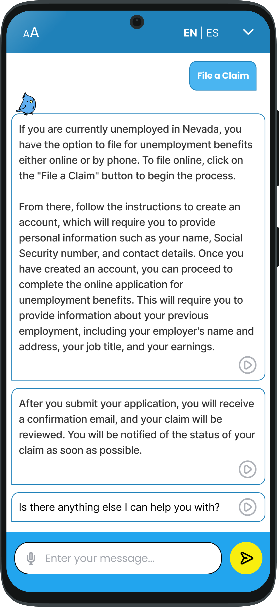

Carson: Nevada’s Unemployment Virtual Assistant
Exploring how AI can help the unemployed
UX & Visual Design
March - April 2023
Team Members: Kassidy Tran, Tiffany Panlilio, Michelle Downey, Logan Gresko

 

Overview
In March of 2023, my team of four UX/UI design students were tasked with redesigning the Unemployment Insurance of Nevada (UINV) website. We designed an AI chat bot to replace the primary navigation of the UINV website and assist users in navigating the site as well as provide user support. This project spanned 6 weeks, starting off with a one week design sprint and ending with a presentation of a high-fidelity, responsive prototype.
Roles & Responsibilities
- Drafted a user persona and storyboard to empathize with users
- Analyzed insights gathered from user research
- Iterated chat bot responses with varying tones, vocabulary, and amount of information using ChatGPT
- Created high-fidelity prototypes for presentation
Tools
- Figma
- ChatGPT
- Google Workspace
- Zoom
Starting off with a design sprint
My team and I started off with a one-week design sprint. We each conducted a cognitive walkthrough of the Nevada Unemployment Insurance Claim Filing System (UINV) website, taking note of these major usability issues:
- Risk of cognitive overload for users due to overwhelming amount of links and texts
- Little hierarchal distinction between content makes the site difficult to navigate
- Poor legibility due to small text size and harsh contasting colors
- Unwelcoming user experience due to cold color palette

To avoid bias in our assessnments, we interviewed two users who have previously filed for unemployment. Both users mentioned feeling stressed during unemployment and wanting to talk to someone who can help.
Based on these insights, our design goals were defined as such:
- Simplify the navigation of the website
- Create a more welcoming atmosphere for users
We created a user persona and problem statement to maintain a concrete description of a user who needed these problems to be solved.
“I am a former warehouse manufacturing business employee. I am trying to apply for unemployment benefits for some stability and the ability to financially support my family, while looking for a new job, but I’m not sure what unemployment benefits I am eligible for. I’m dreading applying because I’m expecting the application process to be long and confusing, because I have never had to apply for unemployment before, which makes me feel overwhelmed!”
Our proposed solution to these problems was to design a chatbot, which would address the following issues:
- Provide users with an immediate and easy to access source of assistance to ease anxiety
- Answer general questions and reduce traffic to call centers
We then came up with a storyboard to empathize with the user's perspective when interacting with the chatbot.

We conducted a usability test with a low-fidelity prototype and asked users how they might interact with the chatbot to file a claim. Insights from our testing revealed that users:
- Found the chatbot more efficient in navigating the website
- Wished the chatbot had more of a personality and felt less robotic
- Wanted to use the chatbot to speak to a human customer service representative
- Preferred to use the chatbot if phone lines for the call center were busy
Creating a chatbot conversation flow
The results of our design sprint revealed the chatbot as favorable among users. Seeing how users preferred to use the chatbot to navigate, we thought to explore the idea of having the chatbot double as the navigation.
Introducing AI
With the chatbot doubling as user support and primary navigation of the website, we decided to design the chatbot with artificial intelligence (AI) in mind. An AI-chatbot could provide information to the user in a more natural and personable manner.
To create a visualization of our chatbot conversational flow, I followed these steps:
- Conducted content audit of current website content and categorized content by topic
- Brainstormed potential user inputs based on these topics and information
- Entered website information into ChatGPT to train the AI to respond accurately
- Compiled user inputs and ChatGPT-generated responses into various conversation sequences in FigJam

Finding the right voice for our chatbot
I knew that personality and delivery of information was crucial for the success of our chatbot in alleviating stress in anxious users. User attitudes towards the chatbot could differ based on the language and tone of voice used. In order to find the right voice for our chatbot, I had ChatGPT generate two responses differing by tone.
We conducted an A/B test with five different responses, differing between a professional tone and a friendly tone.
Variable A - Friendly Tone
- Simpler language
- More encouraging diction and punctuation
Variable B - Professional Tone
- Serious language
- More detailed information
Based on our user research insights, we hypothesized that users would prefer a friendly, easygoing response compared to a more professional, serious response.
A/B testing results
Results differed from our expectations: users were split between their preferences, so we needed to compromise.

Variable A - Friendly Tone
What users liked:
- Less intimidating
- Easier to digest due to shorter responses
What users did not like:
- Sounds disingenuous, fake
- Customer service fluff
- Unreliable, vague information
Variable B - Professional Tone
What users liked:
- Appears more reliable
- Expected of a government website
- More detailed information
What users did not like:
- Visually overwhelming due to longer responses
We proposed a compromise: our chatbot will use a professional tone of voice, and the long responses will be visually broke up into more easily digestible chunks of text using message bubbles. The user interface will also communicate a friendly atmosphere to balance the more serious language.
Iterating layouts and applying style

We chose a bluebird as our chatbot's avatar, inspired by Nevada's state bird, and named it Carson, after Nevada's state capital. This allowed us to avoid the impersonal and robotic representation of a typical chatbot.
By using a non-human persona for our chatbot, we wanted the user to feel like they are still receiving the assistance they need without needing to feel judged for their circumstances by another person.
The blue and yellow color palette communicates Carson’s trustworthiness and eagerness to help, and the rounded corners softens the design and allows Carson to appear friendlier.
Compared to standard chatbot designs, we chose to enclose our chatbot in a large pop-up window. This was decided upon for a variety of reasons:
- Chatbot also acts as a navigation system for the website
- No products or important information is displayed on the home page, so it is unlikely users will need to view the home page and use the chatbot simultaneously
- Improving legibility and interaction experience for users by maximizing available space for the chat window
Interactive prototype
Learning opportunities
This case study provided an excellent opportunity to practice visual design, and how to ensure each design choice is a conscious decision. Visual design can evoke certain emotions within the user, which affects the overall user experience of using the website or app.
Additionally, this was the first time I was able to practice using AI in the design process. I believe that AI tools like ChatGPT are beneficial in streamlining the design process, and am looking forward to exploring other AI tools for design projects in the future.
If I had more time to work on this project, I would absolutely want to complete further testing of our prototype and determine whether or not our visual design eased user anxiety or not. Furthermore, I also wished that we had the opportunity to test more for accessibility of our design and better adhere to the WCAG standards.